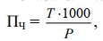
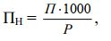
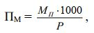
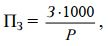
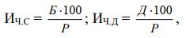
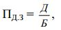

План
1. Травмы и их подразделение. Степень тяжести. Профессиональные заболевания.
2. Порядок расследования и учета несчастных случаев на производстве.
3. Порядок расследования и учета профессиональных отравлений и профессиональных заболеваний.
4. Относительные показатели производственного травматизма и профессиональной заболеваемости.
5. Причины производственного травматизма и профессиональной заболеваемости. Методы анализа травматизма.
Травмой(гр.trauma – повреждение, ранение) называют нарушение анатомической целостности или физиологических функций тканей или органов человека, вызванное внезапным внешним воздействием.
Травмы подразделяют намеханические(ушибы, переломы, раны и др.),тепловые(ожоги, обморожения, тепловые удары),химические(химические ожоги, острое отравление, удушье),электрические, комбинированныеи др.
По степени тяжести повреждений травмы бывают: легкие, тяжелые и смертельные. Травмы могут быть и групповыми, если травмировано два и более человек.
Профессиональное заболевание – это заболевание в результате воздействия на работающего специфических для данной работы вредных производственных факторов и вне контакта с ними возникнуть не может. Например, профессиональное отравление, которое бывает острым и хроническим. Профзаболевание обычно возникает в результате какого-то периода работы в неблагоприятных условиях и точное время заболевания установить нельзя.
Выделяют группыпроизводственно-обусловленныхзаболеваний, когда условия труда способствуют их возникновению: радикулит, варикозное расширение вен, болезни сердечно-сосудистой системы и др.
Порядок расследования и учета несчастных случаев на производстве.
Порядок расследования и учета установлен «Положением о расследовании несчастных случаев на производстве». Цель расследования и учета несчастных случаев на производстве – установление и устранение причин их возникновения с целью недопущения их впредь.
Положение распространяется на территории предприятия, на работы по заданию администрации вне территории предприятия, а также при доставке рабочих и служащих на работу и с работы на транспорте предприятия.
Острые отравления, тепловые удары, обморожения, поражения молнией расследуются как несчастные случаи.
Каждый несчастный случай, вызвавший потерю трудоспособности на срок не менее одного рабочего дня, должен в течение 24 ч (не считая времени, необходимого для прибытия к месту несчастного случая) расследоваться руководителем соответствующего участка (начальника цеха и т.п.) с привлечением общественного инспектора по охране труда или представителя профсоюзного комитета и начальника отдела (инженера) охраны труда.
Составляется акт (форма Н-1) в 4-х экземплярах, где описаны результаты расследования. Акт хранится 45 лет на предприятии, где этот случай взят на учет. Руководитель предприятия в суточный срок должен утвердить акт, а также принять меры к устранению причин возникновения несчастного случая. Один экземпляр акта (с перечнем мероприятий по устранению причин несчастного случая) направляется в подразделение, 1 – в отдел охраны труда и техническому инспектору труда, контролирующему предприятие.
Положение устанавливает порядок расследования и учета травм, полученных работниками (учащимися, студентами), направляемыми одним предприятием на другое. Этот порядок определяется тем, под чьим руководством выполняется работа. Если работой руководит персонал предприятия, на которое направлен работник, то травма расследуется и учитывается эти предприятием. Если работы ведутся под руководством представителя предприятия, направившего работника, то травма расследуется и учитываетсяпредприятием(учебным заведением), направившим работника. В расследовании таких несчастных случаев, как правило, принимают участие представители обеих организаций.
Несчастные случаи на производстве, в результате которых пострадавший по заключению лечебного учреждения переводится до восстановления прежней трудоспособности на другую работу, подлежит расследованию и учету с соответствием акта по форме Н-1 в общем порядке.
Групповые (2 и более работников), тяжелые и смертельные несчастные случаи подлежат специальному расследованию. Руководитель предприятия должен немедленно оповестить вышестоящий хозяйственный орган; технического инспектора труда, областной (городской, краевой, республиканский) комитет профсоюза; совет профсоюзов, прокуратуру, а также местные органы Госгортехнадзора или Главгосэнергонадзора, если случай произошел на объектах им подконтрольных. Отсутствие своевременного сообщения о таких случаях рассматривается как попытка скрыть его от расследования.
Расследование случаев с особо тяжелыми последствиями производится комиссией, назначенной министром, руководством ведомства, Правительством Республики Казахстан. При необходимости к расследованию привлекаются специалисты-эксперты, проводятся специальные расчеты, исследования, испытания и т.п. Так как все это требует затраты времени, то на составление акта специального расследования допускается затратить не более 10 дней.
В Положении приведены форма и содержание акта специального расследования, а также схема сообщения о несчастном случае. Помимо акта специального расследования на каждый случай составляется акт (форма Н-1), а технический инспектор труда профсоюза составляет свое заключение. Комплекты документов по результатам специального расследования групповых, тяжелых и смертельных случаев направляются в профсоюзные органы, прокуратуру по месту нахождения предприятия, вышестоящей хозяйственной организации, соответствующим управлениям Госгортехнадзора и Главгосэнергонадзора, если случай произошел на подконтрольных им объектах.
Положение определяет права пострадавшего, членов его семьи (в случае смерти пострадавшего) или других заинтересованных лиц. Администрация обязана выдать им заверенную копию акта о несчастном случае не позднее чем через 3 дня после окончания расследования. При необходимости выдается не одна, а несколько копий.
Травма не считается связанной с производством: при хищении материальных ценностей, при изготовлении или использовании в личных целях механизмов, оборудования, инструментов, если несчастный случай является результатом опьянения и др., т.е. если в момент травмы пострадавший действовал не в интересах производства и его действия не соответствовали правилам внутреннего распорядка. Если случай произошел при изготовлении предметов в личных целях, но с разрешения администрации, то его следует считать связанным с производством.
Несчастные случаи, которые считаются связанными с работой: в пути на работы и с работы; при выполнении государственных и общественных обязанностей; при выполнении долга гражданина КР по спасению жизни людей; при потере трудоспособности в связи с выполнением донорских функций; при выполнении работ в интересах предприятия (во время командировки); на территории предприятия или в ином месте в течение рабочего времени (включая установленные перерывы), а также в течение времени, необходимого для приведения в порядок орудий производства, одежды и т.п. перед началом или по окончании работы, при выполнении работ в сверхурочное время, в выходные и праздничные дни. Вблизи пред-приятия или иного места работы, в течение рабочего времени (включая установленные перерывы), если нахождение там не противоречило правилам внутреннего трудового распорядка.
При следовании на предоставленном предприятием транспорта на работу и с работы.
Если несчастный случай признан связанным с работой или производством, то потерпевший имеет право получать пособие по временной нетрудоспособности в размере 100% заработка, а в случае необходимости пенсию повышенного размера.
Если случай произошел на производстве, но признан не связанным с производством, то выплата пособий или пенсии производится на общих основаниях (как в случае бытовых травм).
Порядок расследования и учета профессиональных отравлений и профессиональных заболеваний.
Расследованию подлежат все впервые выявленные хронические профессиональные заболевания и отравления и каждый случай острого профессионального заболевания.
Врач медпункта или другого медицинского учреждения обязан в течение 24 ч после обращения заболевшего направить сообщение о заболевании или отравлении в местную СЭС. Так как последствия отравления могут выявиться значительно позже, то извещение составляется на все случаи профзаболеваний и профотравлений независимо от утраты трудоспособности. На основании этого извещения врач СЭС совместно с представителями администрации предприятия и комитета профсоюза проводит расследование этого случая и составляет акт расследования по форме №164, который является юридическим и статистическим документом. На основе актов расследования определяются: оплата больничных листов пострадавшему, размер возмещения предприятием ущерба, размер пенсии (при необходимости). Акт направляют: руководителю предприятия для принятия соответствующих мер; в Минздрав РК.
Относительные показатели производственного травматизма и профессиональной заболеваемости
Для определений и сравнительного анализа травматизма на предприятии, отрасли, сравнения предприятий определяют относительные показатели травматизма на основе отчетов о несчастных случаях. Основными показателями травматизма является их частота и тяжесть, их называют также коэффициентами частоты и тяжести.
Показательчастоты травматизмарассчитывают на 1000 работающих:
где Т – число травм (несчастных случаев) в отчетном периоде с потерей трудоспособности на 1 и более дней;
Р – среднесписочная численность работающих за отчетный период времени.
Показательтяжести травматизма(средняя тяжесть одного случая):
ПТ= Д / Т,
где Д – общее число дней нетрудоспособности у пострадавших для
случаев с потерей трудоспособности на 1 день и более;
Т – общее число таких несчастных случаев за тот же период времени.
Этот показатель не учитывает стойкой потери трудоспособности (инвалидности) и поэтому не характеризует полностью тяжесть травматизма.Показатель нетрудоспособности:
Ргде Д – число человеко-дней нетрудоспособности у пострадавших.
Показатель материальных последствий:
Ргде МП– материальные последствия несчастных случаев за отчетный
период времени, тенге.
Показатель затрат напредупреждение несчастных случаевза отчетный период, тенге:
Ргде З – затраты на предупреждение несчастных случаев за отчетный
период.
При статистическом методе анализа общей заболеваемости на производстве данные обрабатываются по следующим показателям:
ИЧ.С– показатель частоты случаев или
ИЧ.Д– показатель дней нетрудоспособности приходящихся на 100 работников:
где Б – количество случаев заболеваний;
Д – количество дней заболеваний за отчетный период;
Р – среднесписочное количество работающих в отчетном периоде; П3– показатель средней длительности одного случая заболевания (показатель тяжести заболеваемости):
Бгде Д – количество дней временной нетрудоспособности.
Показатели профессиональной заболеваемости рассчитывают не на 100, а на 1000 или 10 000 работающих, т.к. число профессиональных заболеваний невелико.
Причины производственного травматизма и профессиональной заболеваемости.
Помощь в установлении причины несчастного случая может оказать один из методов системного анализа – метод сетевого планирования и управления (СПУ). Сетевая модель свершившегося несчастного случая строится в обратном порядке: от момента травмирования к событиям, ему предшествующим. Необходимо построить сетевую модель и ее проанализировать. Анализ модели проводится в двух направлениях: определение причины существования или появления опасной зоны и выявление причин, вызвавших нахождение человека в этой опасной зане.
Установлены 4 основные формы причинных связей: последовательная, параллельная, круговая, концентрическая.
Последовательная, когда первая причина вызывает вторую, вторая – третью и т.д. до конечной причины, которая приводит к травме.
Параллельная –когда две или несколько параллельных связей вызывают одну общую причину, которая приводит к травме.
Круговая, когда первая причина вызывает вторую, вторая – третью и т.д.
до конечной причины, которая в свою очередь усугубляет первую, первая – вторую и т.д. до тех пор, пока одна из них не приводит к аварии.
Концентрическая, когда один какой-либо фактор служит источником нескольких причин, которые, развиваясь параллельно, вызывают общую причину, приводящую к травме.
Анализу несчастных случаев предшествует их классификация по причинам. Их несколько групп:технические причины(несовершенство технологических процессов, конструктивные недостатки оборудования, инструментов, приспособлений; несовершенство предохранительных устройств, средств сигнализаций и блокировок, дефекты материалов и т.д. Эти причины иногда называют конструкторскими или инженерными.
Организационные причины,которые целиком зависят от уровня организации труда на предприятии.К ним относятся: недостатки в содержании территории, проездов, проходов; нарушение правил эксплуатации оборудования, транспортных средств, инструмента; недостатки в организации рабочих мест; нарушение технологического регламента; нарушение правил и норм транспортировки, складирования и хранения материалов и изделий; нарушение норм и правил планово-предупредительного ремонта оборудования, транспортных средств и инструмента; недостатки в обучении рабочих безопасным методам труда; недостатки в организации групповых работ; слабый технический надзор за опасными работами; использование машин, механизмов и инструмента не по назначению; неприменение средств индивидуальной защиты и т.п.
Санитарно-гигиенические причины,к которым можно отнести нарушение ПДК, недостаточное или нерациональное освещение; повышенные уровни шума, вибраций; неблагоприятные метеорологические условия; нарушение правил личной гигиены и т.п.
Психофизиологические причины –это физические и нервнопсихологические перегрузки работающего (утомление, статические и динамические перегрузки), перенапряжение анализаторов (зрительного, слухового, тактильного), монотонность труда стрессовые ситуации и т.д.
Методы анализа травматизма.
Анализ травматизма используют для предупреждения несчастных случаев. Методы анализа травматизма: Статистический, монографический, экономический и эргономический.
Статистический методиспользует статистический материал по травматизму в виде диаграмм, графиков, таблиц. Разновидностью этого метода являются групповой и топографический методы. Пригрупповом методетравмы группируются по отдельным однородным признакам: времени, возрасту, квалификации и специальности пострадавших; видам работ; причинам несчастных случаев и т.п. Это позволяет выявить наиболее неблагоприятные моменты в организации работ, состоянии условий труда и оборудования.
Притопографическом методевсе несчастные случаи систематически наносят условными знаками на план расположения оборудования в цехе, на участке. Скопление таких знаков показывает травмоопасность и способствует принятию соответствующих мер.
Монографический методанализа травматизма – это анализ опасных и вредных производственных факторов, свойственных одному (моно) участку производства, оборудованию, технологическому процессу. Углубленно рассматриваются все обстоятельства несчастного случая, проводят испытания или исследования. Иногда проводят такой же анализ на аналогичном производстве. Метод используют для разработки мероприятий по охране труда и для вновь проектируемого производства.
Экономический метод– по нему определяют экономический ущерб от травматизма. Он не позволяет выявить причины травматизма и поэтому является вспомогательным.
Эргономический методоснован на комплексном изучении системы «человек – машина (техника) – производственная среда» (ЧМС).
Каждому виду деятельности должны соответствовать определенные физиологические, психофизиологические и психологические (личностные) качества человека, его антропометрические данные. Нарушение соответствия может привести к несчастному случаю.
Здоровье человека зависит от биологических ритмов функционирования его организма и гелиогеографических явлений (активности Солнца, гравитации Луны, магнитного и гравитационного полей Земли). Под воздействием гравитационных сил, вызванных изменением взаимоположения небесных тел, земного магнитизма или ионизации атмосферы происходят определенные сдвиги в организме человека, которые отражаются на его состоянии и поведении. В период повышенной солнечной активности и во время резких изменений погодных условий несчастные случаи возникают чаще.
Следует отметить, что эргономический способ позволяет получить информацию недоступную для других методов.
Применение методов, учитывающих личностные качества работающих не только для анализа травматизма, но и для выявления причин нарушения правил и инструкций по охране труда, позволяет выявить ряд существенных социально-психологических предпосылок возникновения несчастных случаев и тем самым способствует предупреждению травматизма, а также правильной организации профотбора, профобучения и тренинга.
Статистический, эргономический и психофизиологический методы весьма трудоемки.
1. Классификация травм.
2. Расследование профзаболеваний и отравлений.
3. Частота и тяжесть несчастных случаев как основные показатели травматизма.
4. Построение сетевой модели несчастного случая.
5. Статический, монографический, экономический и эргономический методы анализа травматизма.